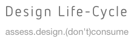
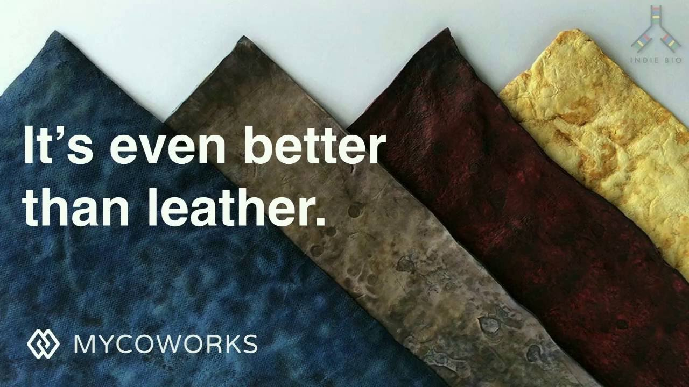
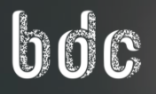

"Designlife-cycle.com is a work-in-progress project by design undergraduate students at the University of California Department of Design. Each of these entries is a group project undertaken by students in DES 40A: Energy, Materials and Design Across Time, a required design history course for the design major. The class is designed and taught by Professor Christina Cogdell, who can be reached at cgcogdell@ucdavis.edu The website is still under construction, and as the class is repeated each year, the contributions will grow."

"We are a team of creative engineers, designers, and scientists working to solve today’s greatest challenges with products made from mycelium, a rapidly renewable natural resource. Our discoveries are foundational to the field of mycotecture and draw from over 20 years of research into designing and engineering mycelium materials. Along with our visionary partners and customers, MycoWorks is building a better world with nature’s best tools."

"The Biodesign Challenge offers art and design students the opportunity to envision future applications of biotechnology in a competition that highlights student work. Our organizers connect classrooms with a team of biologists and experts to guide the students as they develop their ideas."